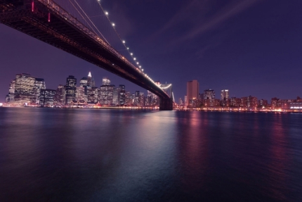
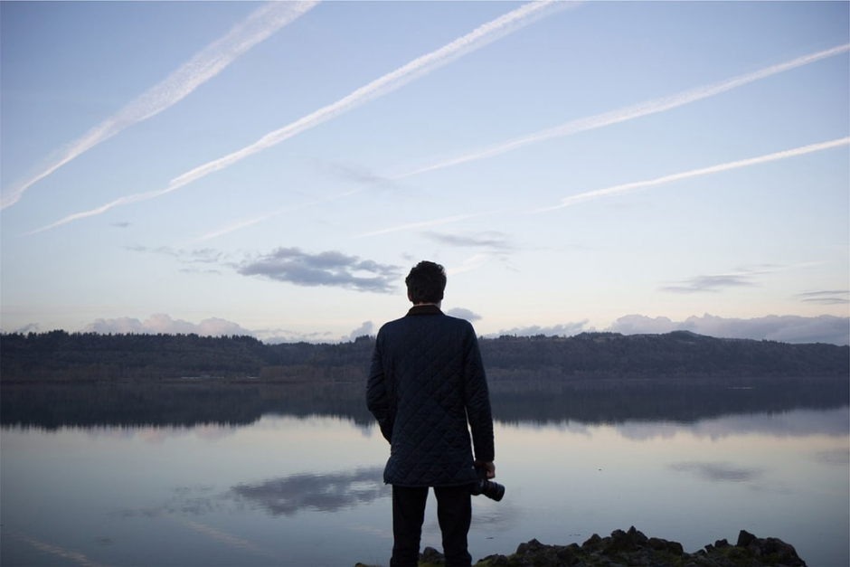
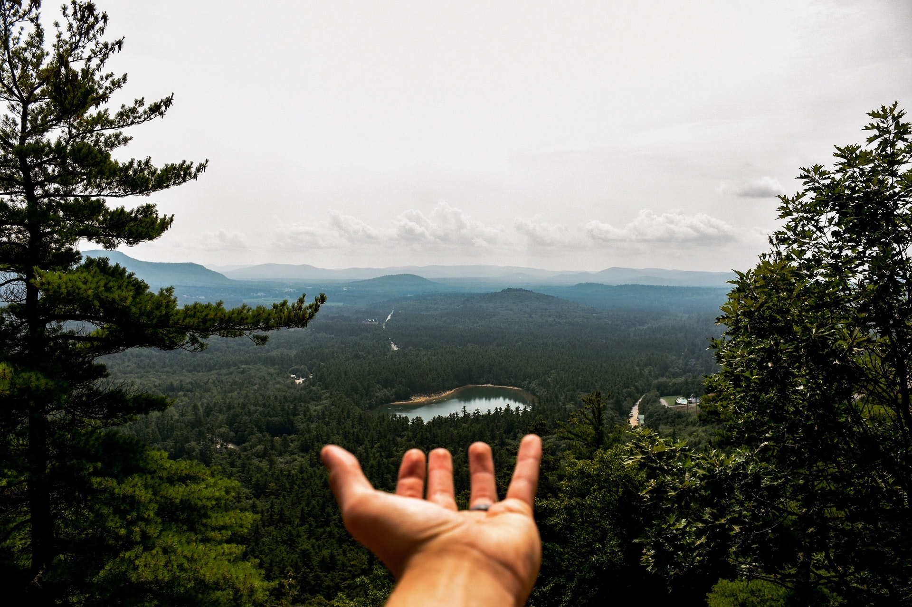
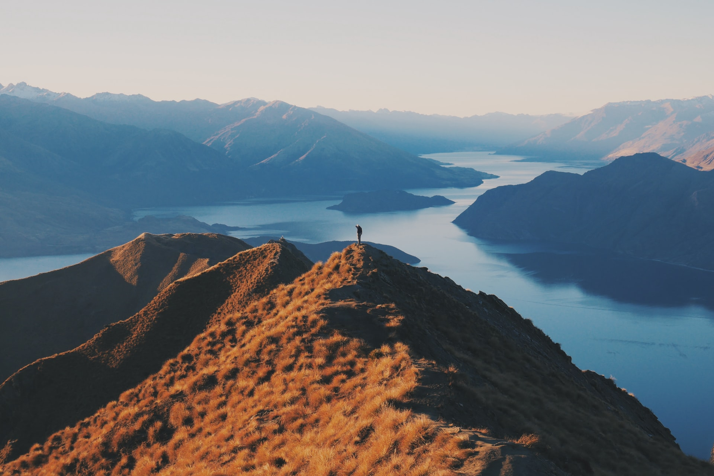

This is Velocity
what we do
This is some text inside of a div block.
Planning a Cycling Trip
A good cycling trip starts with a simple and realistic plan. Choose your route, check the weather, and make sure you have enough food and water for the journey.
Exploring New Roads
Cycling is a great way to discover places that are easy to miss by car. Quiet roads, small villages, and beautiful landscapes can make every trip feel like a new adventure.
Packing for the Journey
Traveling by bicycle requires careful packing because every extra kilogram matters. Take only the essentials, including spare clothes, basic tools, water, and a repair kit.
services
This is some text inside of a div block.

Riding Through the Countryside
Country roads offer a peaceful environment for a long bicycle journey. You can enjoy open fields, forests, small towns, and fresh air while traveling at your own pace.
Long Distance Cycling
Long-distance trips require patience and good preparation. Take regular breaks, drink enough water, and keep a comfortable speed to save energy throughout the journey.
Tab Section
Discovering Small Towns

Cycling Along the Coast
Coastal routes can provide spectacular views and refreshing sea air. Plan your stops carefully and be prepared for strong winds, changing weather, and long sections without services.

Camping by Bicycle
Bike touring and camping are a great combination for travelers who enjoy spending time outdoors. Carry a lightweight tent and sleeping equipment so you can stay overnight wherever it is safe and permitted

Riding in the Mountains
Mountain cycling can be challenging but incredibly rewarding. Climbing requires extra energy, while the long descent gives you a chance to enjoy the scenery and recover.